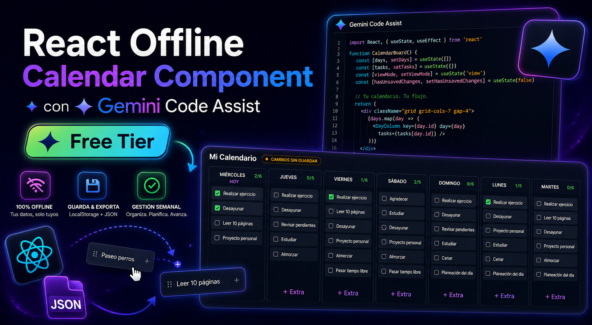

¿Puede una IA gratuita crear componentes React complejos?
Puse a prueba Gemini Code Assist
🚀 Objetivo del experimento
Quería comprobar hasta dónde podía llegar la capa gratuita de Gemini Code Assist enfrentándola a una tarea real: construir una aplicación React funcional y modular sin utilizar herramientas premium.
🎮 Prueba el componente
Puedes interactuar con la versión funcional del calendario directamente desde esta página.
💬 Bitácora de desarrollo
Una de las partes más interesantes del experimento fue el proceso iterativo. Cada mejora fue el resultado de una conversación con Gemini Code Assist.
🏁 Conclusiones
La pregunta inicial era sencilla:
¿Puede una IA gratuita crear componentes React complejos?
Después de más de 25 iteraciones, varios errores corregidos y aproximadamente dos horas de trabajo colaborativo, la respuesta es sí.
Gemini Code Assist no sustituyó la experiencia técnica ni la capacidad de análisis, pero sí aceleró significativamente la construcción del componente.
Para proyectos personales, herramientas internas y prototipos avanzados, la capa gratuita demostró ser mucho más capaz de lo que esperaba inicialmente.